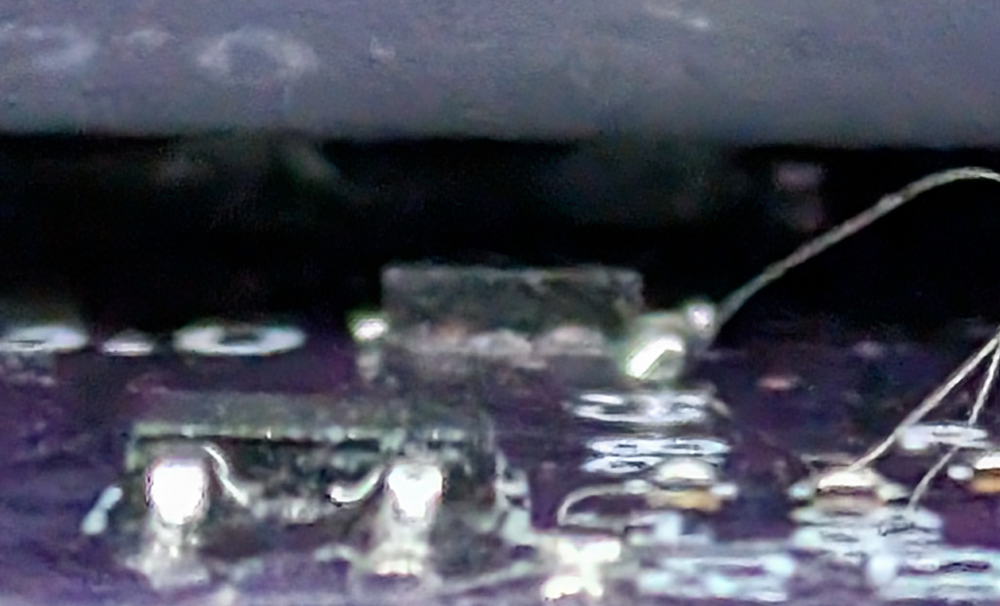
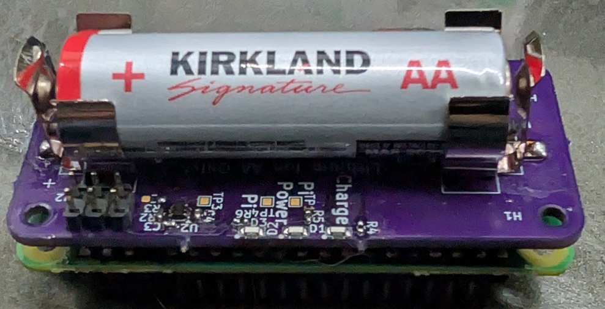
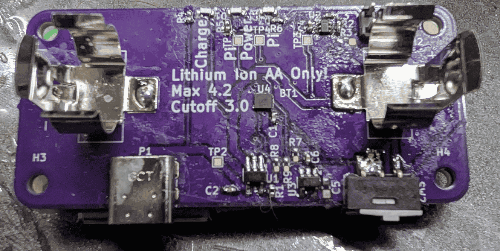

This device uses a series of hardware solutions in order to provide a safe operating environment for the battery. Starting with a load switch to disable any loads from consuming the battery itself: it is fed through a chain of other devices to end up at the overall turn-on signal. The chip immediately before this, is the voltage supervisor chip, which was chosen to drive a signal at 3.0V, with a 100mV hysteresis. No tuning of timing was done for hysteresis to account for transient loads, because in this scenario if it ever drops below the expected voltage, thrashing the on/off may not be the worst scenario for the Pi. And yet preceeding the battery protection chip, is the thermostat. This was not fully tested on this board, because a WSON chip was chosen, and the desire was to ensure it got close to the battery, but not explicitly touch it. Below is a picture of such a scenario, which the argument here being it likely needs to be higher in order to capture the heat of the battery effectively.

Now for the unfortunate parts. The 3D modeling of the battery clasps, and the battery lead to the WSON being too far away from the battery to provide a useful thermal reading. Additionally since there was no stencil purchased for this board, and it was hand assembled, it was soldered imporperly and was not used in the chain to detect proper functionality of the thermostat functionality. It was approximately 1.2mm away, when the desire was close to 300μm. The battery clasps imported from the manufacturer had a recomended size, and placement, but this lead to some improper results from the AA battery (used as the standin for lithium ion variant). The AA did not actually provide electrical content to both clasps, so this needs to be pulled in approximately 4mm. Somewhere between the symbol from the manufacturer, and the choosing of the schematic symbol, the common pin for the SPDT was incorrect. It was easily bodged to continue testing, but did need to be changed for Rev2.

Some minor things are being planned for Rev2. First, a functioning thermostat. Likely will choose a part that can be hand soldered to support this open source design, and a stencil not being required. Additionally, the larger part would actually increase the overall height to get closer to the battery. One other piece being planned, is likely a new part on the board to act as the step before the undervoltage lockout - an RTC. The original intent here is to setup a device for a time lapse camera, and as written the RPI 2W has no great way to selectively turn off rails or anything else like that. If an RTC with a settable-alarm can be used, the full device can be disabled for a period of time and woken up at a future time, meaning absolutely minimal power consumption between expected wakeups. Other things that will be fixed is actively testing on the current hardware to confirm proper electromechanical fixing of the tabs (or potentially the full abandonment and finding a pouch cell better suited for this), and better fitment of the external components to be more seemless.
